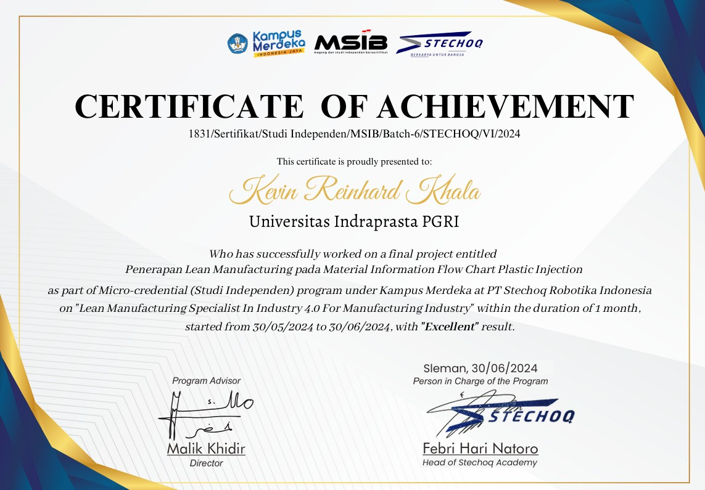
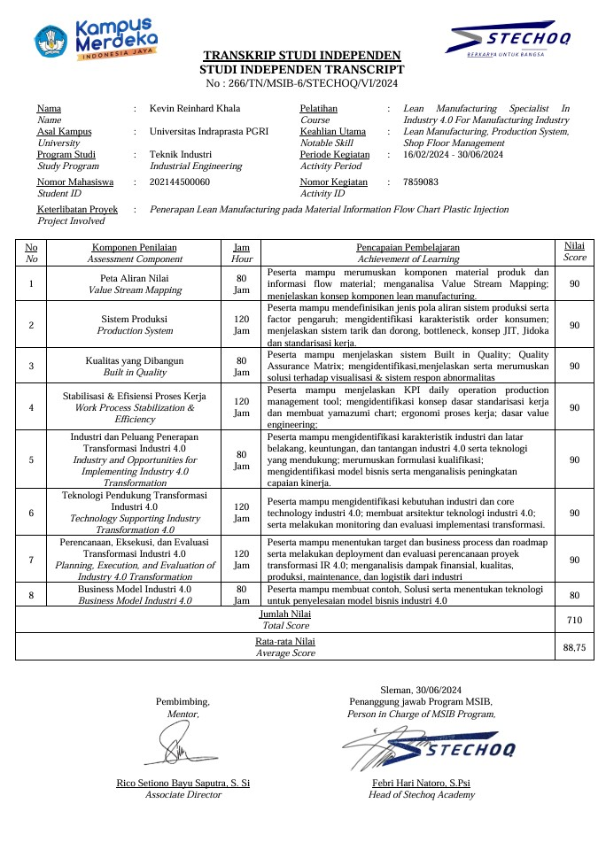

Lean Manufacturing Specialist - Independen Study



PT Stechoq Robotika Indonesia (Kampus Merdeka - Independent Study Batch 6)
July 2024
Remote
"Penerapan Lean Manufacturing pada Material Information Flow Chart Plastic Injection"
The Certified Independent Study and Internship Program (MSIB) is a comprehensive career preparation program that can provide opportunities for students to learn things in the world of work. PT. Stechoq Robotics Indonesia is a company engaged in research and development (R&D) with a main focus on robotics technology innovation and industry 4.0. The company aims to advance various sectors, including medical, education, and manufacturing. PT. Stechoq Robotics Indonesia provides independent study programs, one of which is the Lean Manufacture Engineering Course for Digital Transformation and Industry 4.0. The lean manufacturing method is used to optimize the performance of production systems and processes because it is able to identify, analyze and find improvement solutions. This final research project focuses on the flow of material information on plastic injection machines entitled "Penerapan Lean Manufacturing Pada Material Information Flow Chart Plastic Injection", namely the flow of material information on plastic injection molding machines which function to mold plastic-based materials into desired plastic products. The problem in this research is what causes waste to occur based on the Material Information Flow Chart on the injection molding machine, as well as how to solve the waste problem that occurs in the production flow based on the Material Information Flow Chart on the injection molding machine. The aim of this research is to provide suggestions for improvements for the Material Information Flow Chart of Injection Molding machines, using the Lean Manufacturing method.
Contributors: Kevin Reinhard Khala, Agus Iskandar, Denaro Alfiandito, Neli Agustin, Baihaqi Noor
July 2024
Remote
"Penerapan Lean Manufacturing pada Material Information Flow Chart Plastic Injection"
The Certified Independent Study and Internship Program (MSIB) is a comprehensive career preparation program that can provide opportunities for students to learn things in the world of work. PT. Stechoq Robotics Indonesia is a company engaged in research and development (R&D) with a main focus on robotics technology innovation and industry 4.0. The company aims to advance various sectors, including medical, education, and manufacturing. PT. Stechoq Robotics Indonesia provides independent study programs, one of which is the Lean Manufacture Engineering Course for Digital Transformation and Industry 4.0. The lean manufacturing method is used to optimize the performance of production systems and processes because it is able to identify, analyze and find improvement solutions. This final research project focuses on the flow of material information on plastic injection machines entitled "Penerapan Lean Manufacturing Pada Material Information Flow Chart Plastic Injection", namely the flow of material information on plastic injection molding machines which function to mold plastic-based materials into desired plastic products. The problem in this research is what causes waste to occur based on the Material Information Flow Chart on the injection molding machine, as well as how to solve the waste problem that occurs in the production flow based on the Material Information Flow Chart on the injection molding machine. The aim of this research is to provide suggestions for improvements for the Material Information Flow Chart of Injection Molding machines, using the Lean Manufacturing method.
Contributors: Kevin Reinhard Khala, Agus Iskandar, Denaro Alfiandito, Neli Agustin, Baihaqi Noor